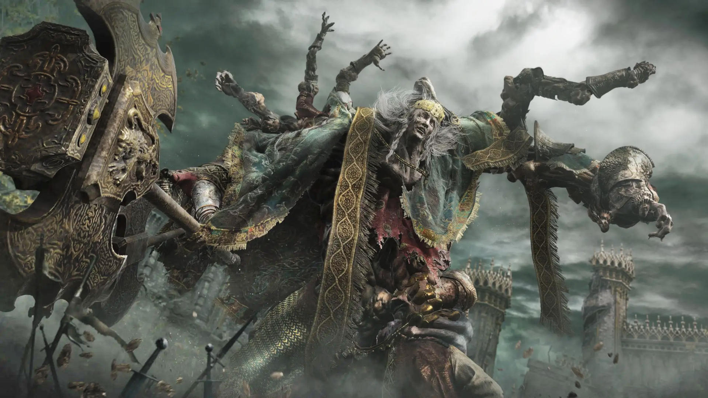

|  | Godfrey | Egyik kedvenc főellenfelem
|---|
Az Elden Ring sztorija a The Lands Betweenben játszódik. A játékos
egy elhagyatott és veszélyes helyként ismeri meg, tele élőhalott katonákkal és időnként sárkányokkal, de ez
nem mindig volt így. Réges-régen az egykor gyönyörű és virágzó birodalmat békésen uralta Marika királyné,
„Az Örökkévaló” és gyermekei, a Félistenek.
Ez a nemesi család és népe sokáig az Erdtree és az Elden Ring áldása alatt élt. Itt kezd kissé bonyolulttá
válni; az Erdtree (ahogy a neve is sugallja) egy hatalmas, fénylő fa, de az Elden Ring
valójában nem egy gyűrű. Ellentétben azzal, amit a másik R. R. írt, az Elden Ring egy titokzatos erő, amely
megtartotta a Közötti Földek „Arany Rendjét”.
A következő események alapján úgy tűnik, hogy az Elden Ring az Erdtree forrása. Nagy rúnákból áll, köztük
egy úgynevezett „halálrúnából”.